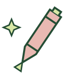

Пространство
Максимум площади страницы. Минимум лишних панелей.
Читайте, организуйте и размечайте PDF в одном спокойном рабочем пространстве. Без лишнего интерфейса — с полным контролем над инструментами.
Ничто не должно отвлекать от документа. Панели компактны, действия настраиваются, а файлы остаются под вашим контролем.
Познакомиться с Monic Control Bar ↗Максимум площади страницы. Минимум лишних панелей.
Настраивайте инструменты под собственный процесс.
Документы и данные хранятся там, где решите вы.
От первого открытия файла до готового конспекта — инструменты собраны в единую систему.
Поиск по тексту, масштабирование, поворот страниц и режим двух страниц.
PDF.JS · SEARCH · 2-PAGEПапки, коллекции, избранное и недавние документы. Всё легко найти.
LOCAL · SEARCHРучка, маркер, выделение, фигуры, стрелки и текстовые пометки.
INK · HIGHLIGHT · UNDOПоследняя страница, масштаб, позиция чтения, закладки и состояние рабочего места.
AUTOSAVE · RESTOREАннотированная копия создаётся отдельно. Оригинал остаётся нетронутым.
SAFE COPY · PDFСветлая и тёмная темы, системный акцент Windows и три режима пространства.
LIGHT · DARK · FOCUSДва понятных способа открыть документ. Ваш оригинал всегда остаётся под контролем.
Файл остаётся в исходной папке. Приложение запоминает его в истории и сохраняет прогресс чтения.
Документ копируется в выбранное хранилище. Его удобно сортировать по папкам и коллекциям.
Сначала архитектура и надёжная основа. Затем — инструменты, которые действительно экономят время.
Следить за проектом на GitHub ↗Назначение, принципы, структура и лицензия.
Модель хранения, UI-система, Monic Control Bar.
Просмотрщик, библиотека и навигация по PDF.
Инструменты разметки, сохранение и экспорт.
Проверка, установщик и первая публичная версия.
Пока нет. Проект находится на стадии проектирования. Установщик появится после проверенного релиза.
Цель — локальная работа без обязательного аккаунта и облачного хранилища. Точные сетевые функции будут описаны до релиза.
Аннотации планируется хранить отдельно, а экспорт будет создавать новую копию.
Да. Добровольные донаты возможны, но не являются условием доступа.
Да. Откройте Issue на GitHub или напишите автору по вопросам сотрудничества.

PDF Workspace готовится к первому релизу. Следите за обновлениями и развитием проекта на GitHub.